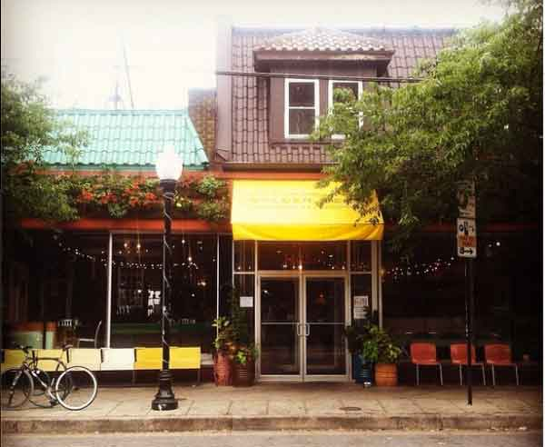
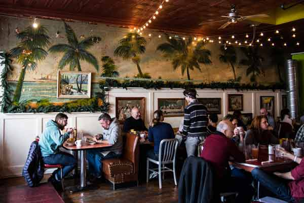

Golden West Cafe


1105 W 36th St.,
Baltimore,
MD
21211
(410) 889-8891
Golden West Cafe is a beloved Baltimore culinary institution, serving Americana cuisine and Southwest comfort food, rooted in traditional New Mexican specialties.
Our newly reconceived dining room boasts an eclectic setting for customers while they enjoy our house-made specialities, old school lunches and dinner favorites. Our Long Bar has become one of Baltimore’s favorite late night hotspots, and is open all day for eats and drinks, with food served until midnight.
Golden West sources from local producers such as Springfield Farm, Cherry Glen Farm, Tanner’s Pickles and Zeke’s Coffee. We are also proud to serve a wide array of vegan and vegetarian options, and have a full gluten-free menu that includes our house-made desserts.